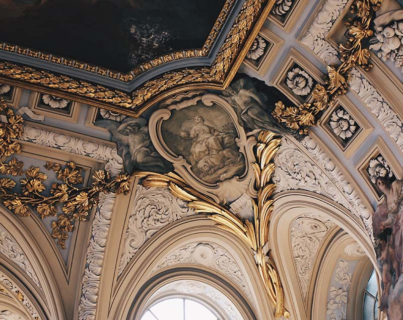
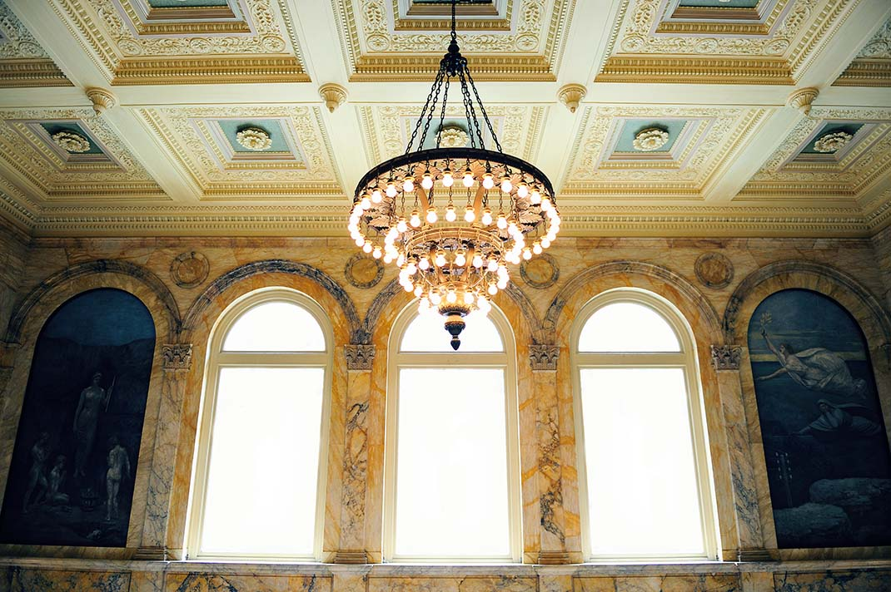
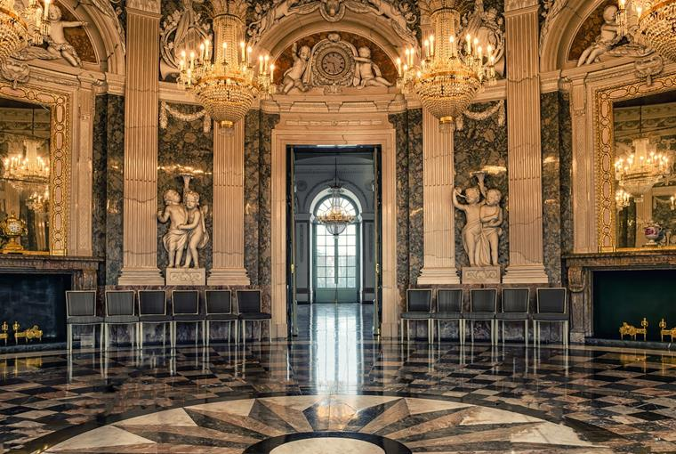

A diferencia de la arquitectura monumental del Barroco, diseñada para abrumar desde el exterior, la arquitectura Rococó es un arte de intimidad. Los edificios exteriores suelen presentar fachadas sobrias y elegantes, guardando toda su exuberancia para los espacios internos.
La innovación principal fue la ruptura con la línea recta. Los arquitectos comenzaron a diseñar habitaciones con formas circulares y ovales, eliminando las esquinas mediante el uso de molduras curvas (boiseries) que fusionan las paredes con los techos.
El uso de la luz es magistral: grandes ventanales y espejos estratégicamente colocados multiplican la iluminación, creando una sensación de ligereza. El material estrella es el estuco, que permite crear formas orgánicas, conchas y motivos vegetales que parecen flotar sobre las superficies.